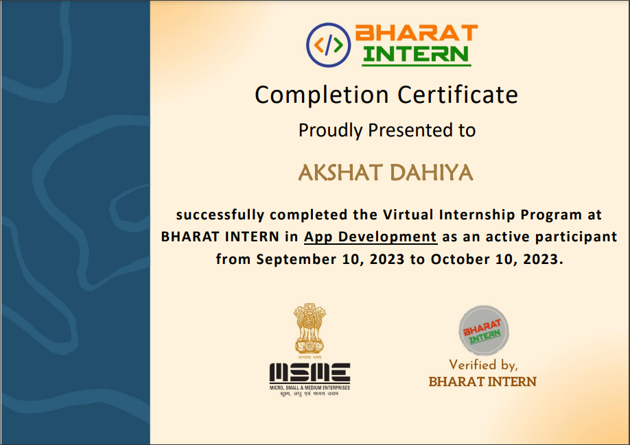
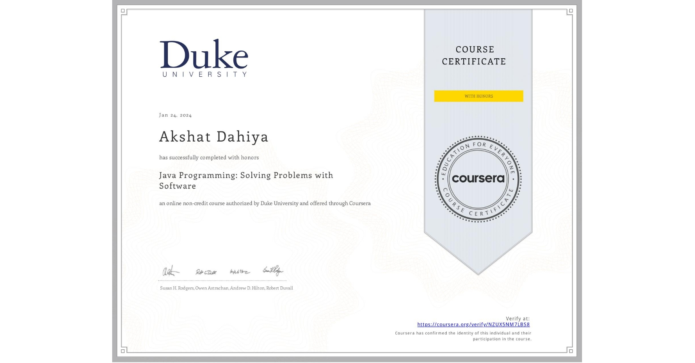
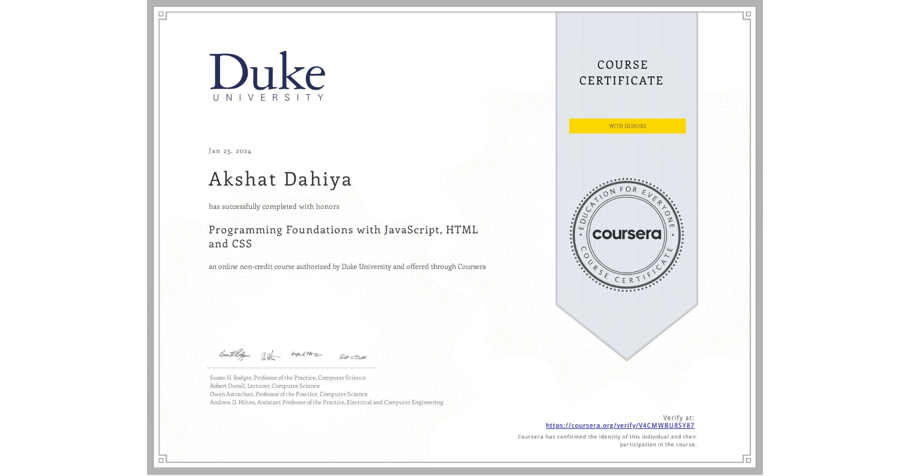
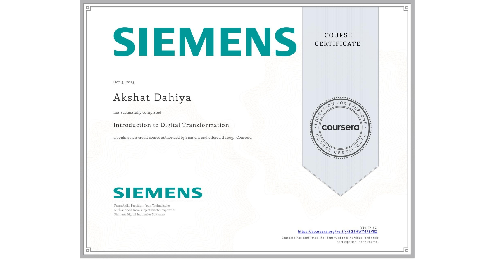
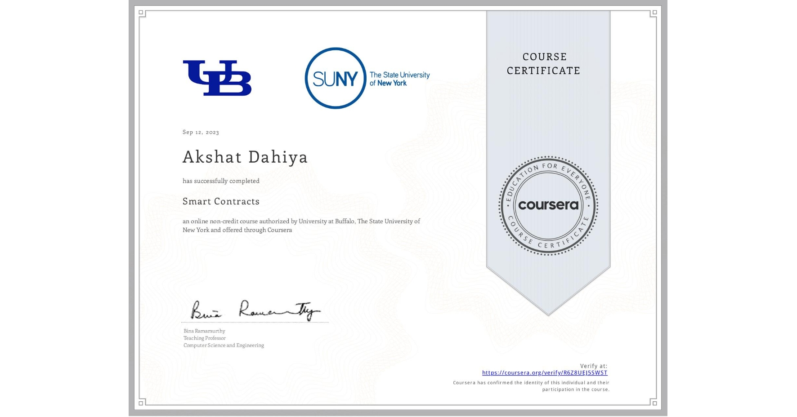
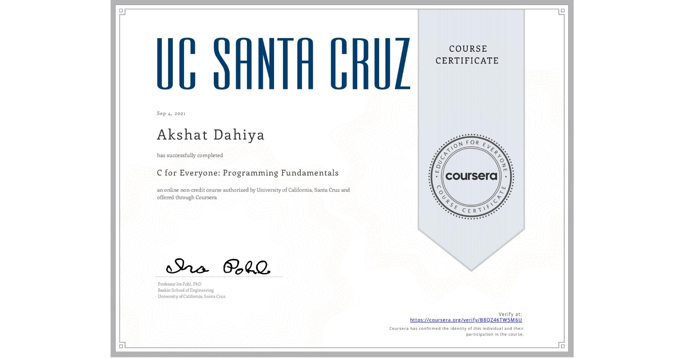

During my internship at Bharat Intern in the field of app development, I had the invaluable opportunity to gain hands-on experience and contribute to real-world projects. Bharat Intern, being a private company, provided a dynamic and challenging environment that enriched my understanding of app development. Throughout the internship, I primarily focused on utilizing JavaScript within the Android Studio IDE to create innovative and functional mobile applications.
Working within the Android Studio IDE allowed me to immerse myself in the Android app development ecosystem. I became adept at using JavaScript to craft dynamic and user-friendly interfaces, ensuring a seamless user experience. The internship not only sharpened my technical skills but also exposed me to the collaborative nature of professional app development.
Under the guidance of experienced mentors at Bharat Intern, I actively participated in the entire app development life cycle, from conceptualization and design to coding, testing, and deployment. This practical exposure not only deepened my understanding of JavaScript in the context of mobile app development but also enhanced my problem-solving and teamwork abilities. Overall, the internship at Bharat Intern was a transformative experience that significantly contributed to my growth as an app developer.

After finishing the Java programming course, I've learned a bunch of cool stuff! First off, I can now easily edit, compile, and run Java programs. I also know how to use loops and conditionals to make my programs do different things. The course taught me to use the Java API documentation, which is like a guidebook for writing code.
One of the neatest things I learned is how to find and fix errors in my Java programs using a step-by-step method. I can now write special Java methods to solve specific problems, and I know how to create a bunch of tests to make sure my programs work correctly. The course also showed me how to make classes with lots of methods that work together to solve bigger problems. Lastly, I learned this cool technique called "divide-and-conquer," which helps me design programs that use many methods efficiently. With my certificate in hand, I feel confident and ready to take on real-world coding challenges!

Upon completing this course, I've gained valuable skills to approach problem-solving through programming with a critical mindset. I now have the ability to craft JavaScript programs using functions, for loops, and conditional statements, allowing me to efficiently tackle a variety of challenges. Additionally, I've mastered the art of constructing engaging web pages using HTML, incorporating elements like paragraphs, divs, images, links, and lists to create a visually appealing and structured layout.
In the realm of styling, I've become adept at using CSS IDs and classes to add flair to my web pages, enhancing the overall user experience. Furthermore, the course has equipped me with the knowledge to make my web pages dynamic and interactive. I can now employ JavaScript commands like alert, onClick, and onChange to engage users, along with incorporating features such as image canvases, buttons, and sliders for user input. Armed with these skills, I feel confident in my ability to not only code functional programs but also create captivating and interactive web experiences.

Having successfully completed this course, I now possess a solid foundation in Digital Transformation. Tailored for professionals, college students, and advanced high school students, the course is accessible to anyone with a basic understanding of business terms and concepts, along with an interest in digital technology, and it doesn't require any formal prerequisites.
Throughout the course, I delved into the impactful world of Digital Transformation, learning about current trends in computing, visualization, connectivity, and artificial intelligence and how these trends shape businesses. The course also equipped me with knowledge about digital tools for designing, manufacturing, and utilizing products. The practical applications of these technologies across eight key industries were particularly insightful.
As a result, I now have the ability to succinctly summarize digital transformation and its fundamental concepts. I can identify and comprehend crucial technical trends within today's economy and apply digital tools to transform business processes. Most importantly, I've gained the skills to analyze and implement digital transformation across various industries. This course has been an enlightening journey, providing me with valuable insights into the intersection of technology and business in the digital age.

Upon completing this second course in the Blockchain specialization, I have acquired valuable skills in designing, coding, deploying, and executing smart contracts. The course focused on several key categories, enhancing my proficiency in Smart Contract development, Cryptocurrency understanding, Solidity programming language, Remix IDE utilization, and overall Blockchain technology.
Specifically, I have developed the ability to create and implement smart contracts, a crucial element in the blockchain landscape. The course deepened my knowledge of Solidity, the programming language essential for crafting smart contracts, and I am now adept at using Remix IDE for efficient development workflows. The broader perspective on blockchain and cryptocurrency gained in this course has broadened my understanding of these transformative technologies.
In essence, this course has equipped me with practical skills, allowing me to actively contribute to the evolving field of blockchain technology. I am now well-prepared to design and execute smart contracts, making meaningful contributions to the advancement of blockchain applications.
Having completed this learning module, I have acquired the skills to recognize and apply foundational concepts of blockchain programming. The course is structured around key categories, providing a comprehensive understanding of Ethereum, Cryptography, Blockchains, and Bitcoin.
In the Ethereum category, I gained insights into the workings of the Ethereum blockchain platform, understanding its unique features and functionalities. The Cryptography category equipped me with knowledge about cryptographic principles, crucial for securing transactions and data within the blockchain ecosystem. Exploring the broader category of Blockchains enhanced my understanding of the technology's fundamentals, while the Bitcoin category delved into the specifics of this pioneering cryptocurrency.
Overall, this module has not only increased my awareness of foundational blockchain concepts but has also equipped me with practical skills to apply these concepts in a programming context. I now feel confident in navigating the Ethereum platform, implementing cryptographic principles, and understanding the broader blockchain landscape, including the specifics of Bitcoin. This learning experience has prepared me to actively contribute to blockchain development and programming endeavors.

Having successfully completed this course, I now possess practical programming skills across various levels. I can confidently write simple programs, establishing a solid foundation in coding principles. Additionally, I've mastered the crucial processes of compiling, debugging, and running programs, enabling me to navigate the complete development lifecycle with ease.
Beyond the basics, the course has equipped me with advanced proficiency in areas such as arrays and pointers, functions and storage classes, as well as logic operators and various question types. I am now adept at manipulating data using arrays and pointers, organizing code effectively with functions and storage classes, and employing logic operators to address diverse problem types.
Moreover, I have gained expertise in working with lexical elements and different data types, empowering me to handle a variety of data structures in my programming endeavors. This comprehensive learning experience has transformed me into a well-rounded programmer, capable of not only writing basic programs but also confidently tackling advanced concepts like arrays, pointers, functions, and logic operators.